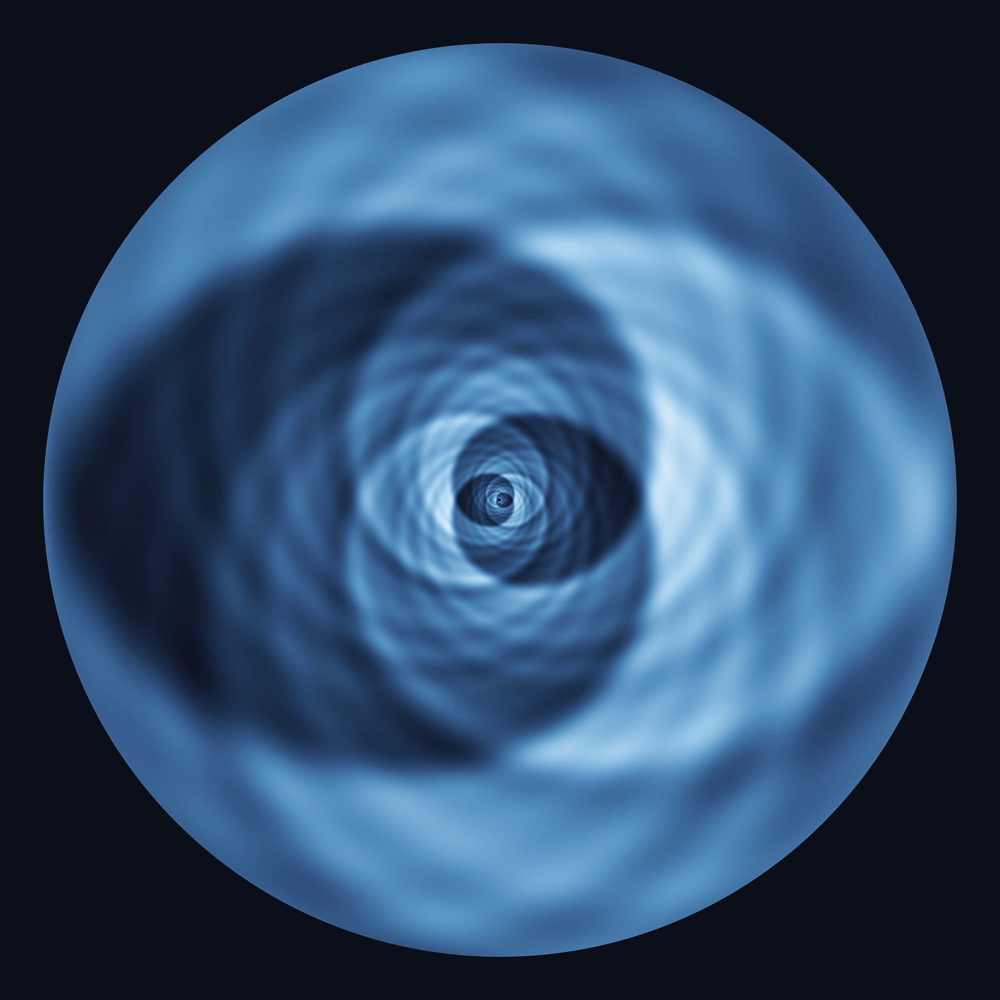
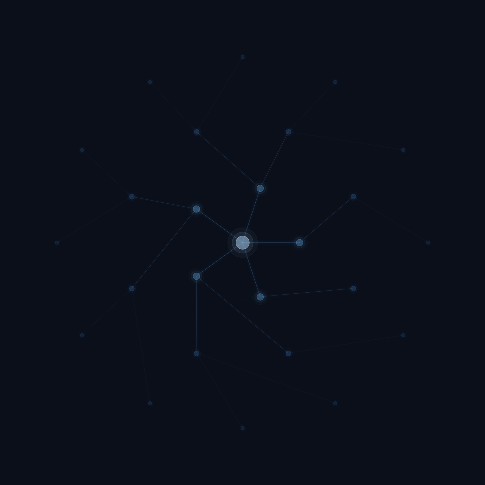
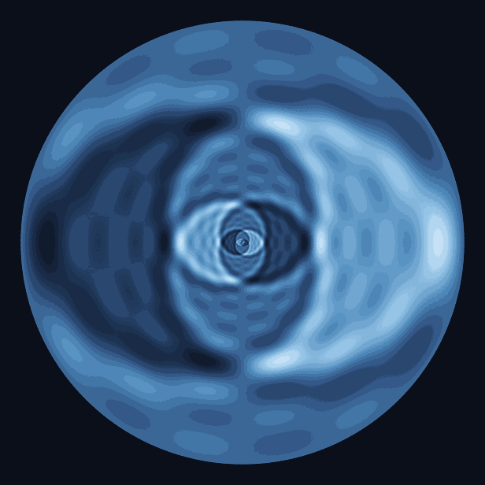

Somos uma iniciativa independente de pesquisa científica dedicada ao desenvolvimento e à exploração de novas abordagens em ciência fundamental.
O instituto atua na interseção entre física teórica, ciência da informação e sistemas complexos, com o objetivo de investigar estruturas fundamentais da natureza e desenvolver novos modelos científicos capazes de ampliar a compreensão contemporânea desses sistemas.
A iniciativa parte da convicção de que avanços científicos significativos exigem ambientes de pesquisa abertos à investigação conceitual profunda e à exploração de novas abordagens teóricas, matemáticas e tecnológicas.
Conduzir pesquisa científica interdisciplinar voltada à compreensão e modelagem de sistemas informacionais, físicos e complexos.
O instituto busca contribuir para o avanço do conhecimento científico e para o desenvolvimento de novas abordagens teóricas e matemáticas capazes de ampliar as fronteiras da investigação científica contemporânea.
Consolidar-se como um instituto independente de pesquisa dedicado à investigação científica de longo prazo em ciência fundamental, informação e sistemas complexos.
A iniciativa pretende promover ambientes de pesquisa abertos à colaboração científica e ao desenvolvimento de novas abordagens capazes de conectar diferentes áreas do conhecimento.

A atuação científica do instituto é orientada por princípios fundamentais que guiam todas as atividades de pesquisa.
Compromisso com investigação científica conduzida de forma rigorosa e transparente, respeitando os mais altos padrões metodológicos.
Integração entre diferentes áreas do conhecimento científico para gerar novas perspectivas e abordagens.
Valorização de investigações científicas que exigem exploração conceitual profunda e não se limitam a resultados imediatos.
Desenvolvimento de pesquisa orientada por princípios éticos e responsabilidade social.
Estímulo à cooperação científica com pesquisadores e instituições ao redor do mundo.
O instituto opera como uma iniciativa independente de pesquisa científica orientada por princípios de transparência, integridade científica e responsabilidade institucional.
A estrutura de governança do instituto será expandida progressivamente conforme o desenvolvimento das atividades científicas e o estabelecimento de novos programas de pesquisa.
A iniciativa adota o entendimento de que o desenvolvimento do conhecimento científico e tecnológico deve contribuir para o benefício da sociedade.

Programas de investigação interdisciplinar voltados à exploração de questões fundamentais na fronteira do conhecimento.
Investigação teórica na interseção entre mecânica quântica, gravitação e ciência da informação.
Modelagem e análise de sistemas complexos adaptativos, incluindo fenômenos de emergência, auto-organização e dinâmicas não-lineares.
Estudo das propriedades fundamentais da informação como elemento físico e estrutural de sistemas naturais e computacionais.
Desenvolvimento de simulações computacionais, modelagem matemática e ferramentas de investigação científica.
As atividades científicas são organizadas em programas de investigação interdisciplinar voltados à exploração de diferentes aspectos da ciência da informação, da física fundamental e dos sistemas complexos.
Esses programas integram investigação teórica, modelagem matemática e experimentação computacional. Novas iniciativas de pesquisa serão incorporadas conforme o desenvolvimento das atividades científicas do instituto.

O programa científico central concentra-se no desenvolvimento e investigação do framework Quântico-Gravitacional-Informacional (QGI).
Esse programa busca explorar abordagens que tratam as leis físicas como propriedades emergentes de estruturas informacionais fundamentais.
As investigações incluem estudos sobre unificação de constantes físicas, transições dimensionais dependentes da escala de energia e implicações para problemas abertos da física contemporânea.
Novos programas de pesquisa serão incorporados conforme a evolução das atividades científicas do instituto.
Trabalhos adicionais em preparação.
Estamos abertos a colaborações com pesquisadores, grupos de pesquisa e instituições científicas interessados em investigações interdisciplinares em ciência fundamental, informação e sistemas complexos.
Pesquisadores interessados podem entrar em contato com o instituto para discutir possíveis iniciativas de colaboração científica.
O instituto encontra-se em fase inicial de desenvolvimento institucional.
Nos próximos anos, o instituto pretende expandir suas atividades de pesquisa, desenvolver novos programas científicos e estabelecer colaborações com a comunidade acadêmica. O crescimento institucional será conduzido de forma gradual, priorizando qualidade científica e consistência das atividades de pesquisa.
Estabelecimento da identidade institucional, definição dos programas de pesquisa iniciais e desenvolvimento do framework teórico central.
Publicação dos primeiros trabalhos científicos, estabelecimento de colaborações e ampliação das atividades de pesquisa.
Desenvolvimento de programas científicos amplos, formação de equipes de pesquisa e contribuições para a comunidade científica internacional.
Para questões institucionais ou propostas de colaboração científica.
contato@qgi.com.br